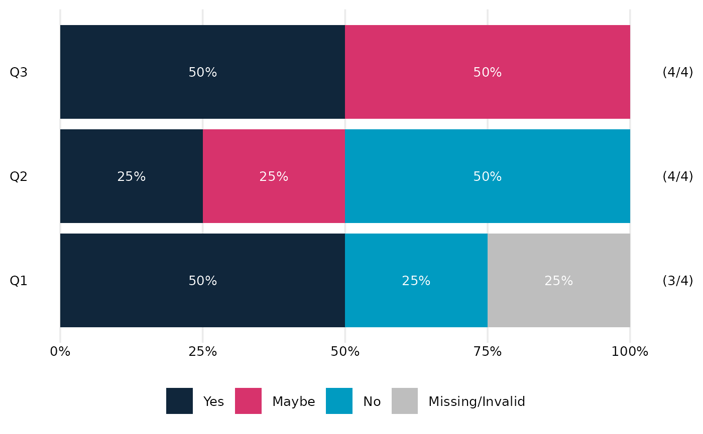
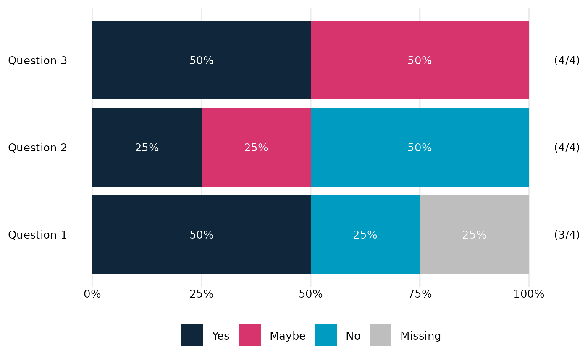
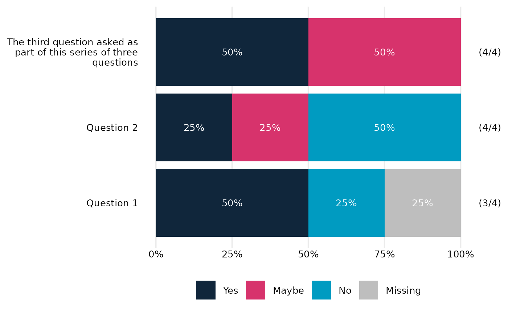
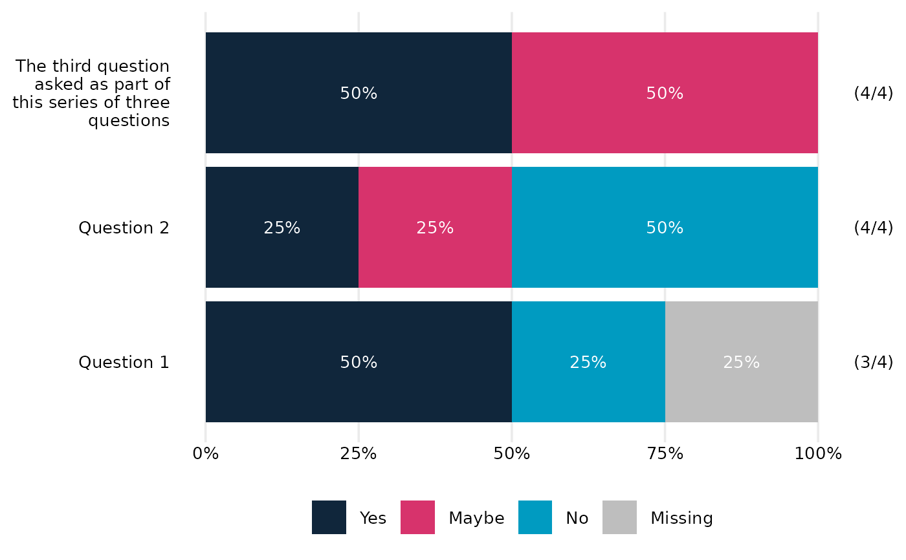
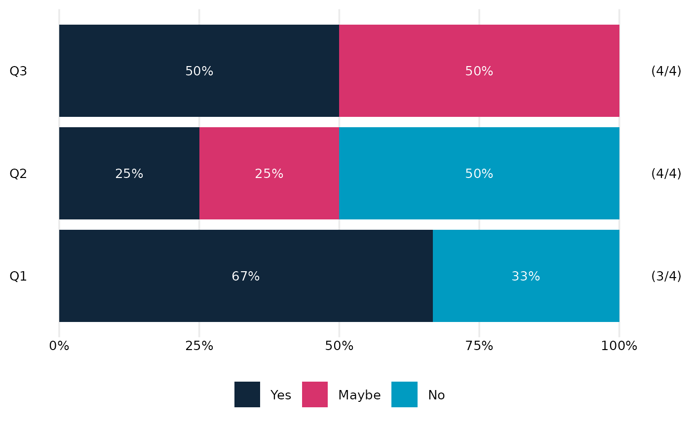
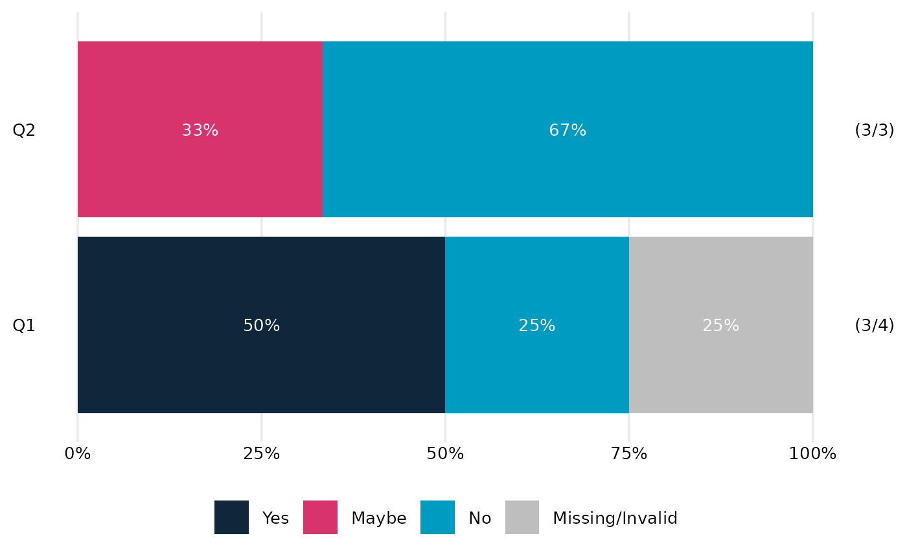

Section-level summary plot for categorical questions
summary_plot_stacked_bar.RdMake a horizontal stacked bar chart to summarise several survey questions, with questions ordered according to the proportion of responses that fit a particular pattern.
Usage
summary_plot_stacked_bar(
dat,
dat_format = "auto",
labels_vec = NULL,
na.rm = FALSE,
NA_label = "Missing",
percCut = 5,
colo = NULL,
order_values = NULL,
titleText = NULL,
fill_label_width = 20,
group_label_width = 30,
show_counts = TRUE,
count_style = "both"
)Arguments
- dat
A tibble/data.frame containing survey responses.
The function supports two input formats:
Simple format: one factor column per question. All questions are assumed to be included and plotted.
Extended format: columns named using the pattern
question_value, with optionalquestion_includeandquestion_plotcolumns.*_valuecolumns contain factor responses.*_include(logical) indicates whether a response is included in the analysis at all.*_plot(logical) indicates whether a response is shown in the plot (values set toFALSEare treated as missing).
Any missing
*_plotand*_includecolumns are assumed to beTRUE.In all cases:
all response variables should be factors with identical levels.
only variables to be used in the plot should be included. I.e. calls may need to be of the form
data |> dplyr::select(<variables needed for plotting>) |> summary_plot_stacked_bar().
- dat_format
One of
"auto","simple", or"extended". Defaults to"auto", which detects extended format if any*_valuecolumns are present, otherwise assumes simple format.- labels_vec
a named vector of labels to use for the questions on the plot. Names are variable names (without _value appended) and values are corresponding labels.
- na.rm
Logical. controls whether missing values (including those created via *_plot = FALSE) are included in the plot as a separate category. If
TRUE, removeNAresponses; ifFALSE(default), convert them toNA_labeland treat as an additional response level.- NA_label
Character, default
"Missing". Label to use forNAresponses.- percCut
numeric scalar (0-100). Cutoff below which percentages are not shown in bar segments. Default
5.- colo
(optional but recommended) vector of colours to use for the fill scale (character vector of colours, length the same as the number of levels of the factor that is the first variable of
dat.) IfNULL(default) the pallete fromOMESurvey::get_OME_colours(type='distinct')is used. Whenna.rm = FALSEa grey colour is prepended for the "No response" level. Note that percentage labels are in white, so the pallete needs to work with that. (... or this function/package needs upgrading!)- order_values
Optional. Controls how questions are ordered in the plot. May be
NULL, a character vector of response levels, or the special value"mean(as.numeric())". See Details.- titleText
Optional text to use as plot title.
- fill_label_width
Optional integer. Width (in characters) used when wrapping fill labels with
stringr::str_wrap(). Passed toOME_stacked_bar(). Default is 20.- group_label_width
Optional integer. Width (in characters) used when wrapping vertical (group/question) axis labels with
stringr::str_wrap(). Default is 30.- show_counts
Logical; whether to display (n) type counts for each bar. Defaults to TRUE. Needs care if used with faceting.
- count_style
Character string controlling how counts are displayed when
show_counts = TRUE. Options are:"non-missing": show number of non-missing responses"total": show total number of responses"both": show both as "(non-missing/total)"
Defaults to
"both".
Details
The order_values argument controls how questions are ordered in
the horizontal bar chart.
If
order_valuesisNULL, questions are ordered in the same order as they appear in the data.If
order_valuesis a character vector of response levels (e.g.c("Strongly agree", "Agree")), questions are ordered by the proportion of respondents whose answers fall into those levels. (Intended for factors with positive-negative / divergent scales.) In this case values inorder_valuesmust be valid levels of the response factor.If
order_valuesis exactly"mean(as.numeric())", the function instead orders questions by the mean of the numeric codes of the response factor. (Intended for factors with low-high / sequential scales.)If
datis supplied in simple format, it is internally converted to the extended format with all*_plotand*_includevalues set toTRUE.
Legend placement
By default, the legend is placed horizontally
according to the standard ggplot2 layout. If you want the legend to be
centred across the full width of the final figure, the helper function
centre_legend_below() can be used after plotting. (This must be done
after any tweaks to the ggplot theme, annotations, etc)
Examples
# Minimal example with three questions and three response levels
dat <- tibble::tibble(
Q1 = factor(c("Yes", "No", "Yes", NA), levels=c("No", "Maybe", "Yes")),
Q2 = factor(c("No", "No", "Yes", "Maybe"), levels=c("No", "Maybe", "Yes")),
Q3 = factor(c("Maybe", "Yes", "Maybe", "Yes"), levels=c("No", "Maybe", "Yes"))
)
# Simplest use
summary_plot_stacked_bar(dat)

# Add question labels
labels <- c(Q1 = "Question 1", Q2 = "Question 2", Q3 = "Question 3")
summary_plot_stacked_bar(dat, labels_vec = labels)

# With custom wrapping if they are long
labels_long <- c(
Q1 = "Question 1",
Q2 = "Question 2",
Q3 = "The third question asked as part of this series of three questions"
)
summary_plot_stacked_bar(dat, labels_vec = labels_long)

summary_plot_stacked_bar(dat, labels_vec = labels_long, group_label_width = 20)

# Remove missing values
summary_plot_stacked_bar(dat, na.rm=TRUE)

# Extended format example
dat_ext <- tibble::tibble(
Q1_value = dat$Q1,
Q1_plot = c(TRUE, TRUE, TRUE, FALSE),
Q2_value = dat$Q2,
Q2_include = c(TRUE, TRUE, FALSE, TRUE)
)
summary_plot_stacked_bar(dat_ext)
